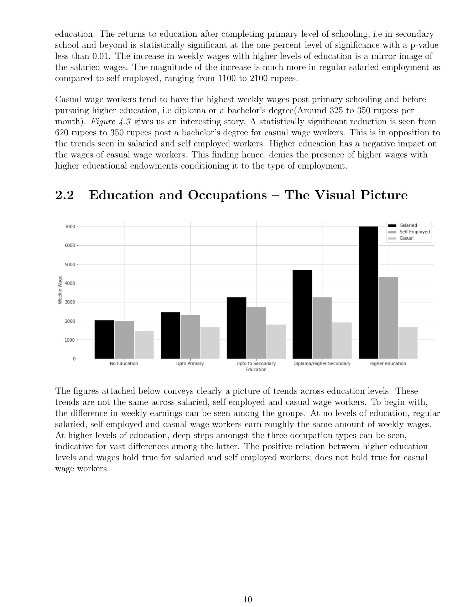

Education & wages


A computational economics paper on education and weekly earnings among salaried, self-employed and casual workers. It uses PLFS 2018–19 data, with rural–urban comparisons, regression controls and interaction terms. Maps and grouped charts accompany the regression tables.
Files
- PDF · 23 pages
By Vaibhav Agarwal.